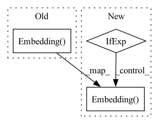

Pattern ID :32755
Before Change
super().__init__()
emb_dim = default(emb_dim, dim)
self.token_emb = nn.Embedding(num_tokens, emb_dim)
self.pos_emb = nn.Embedding( max_seq_len, emb_dim)
self.to_model_dim = identity if emb_dim == dim else nn.Linear(emb_dim, dim)
self.reformer = Reformer(dim, depth, max_seq_len, heads = heads, bucket_size = bucket_size, n_hashes = n_hashes, ff_chunks = ff_chunks, attn_chunks = attn_chunks, causal = causal, weight_tie = weight_tie, lsh_dropout = lsh_dropout, random_rotations_per_head = random_rotations_per_head, twin_attention = twin_attention, use_scale_norm = use_scale_norm, use_full_attn = use_full_attn, full_attn_thres = full_attn_thres, num_mem_kv = num_mem_kv)
self.to_logits = identity if return_embeddings else nn.Linear(dim, num_tokens)After Change
super().__init__()
emb_dim = default(emb_dim, dim)
self.token_emb = nn.Embedding(num_tokens, emb_dim)
self.pos_emb = FixedPositionEmbedding(emb_dim) if fixed_position_emb else nn.Embedding( max_seq_len, emb_dim)
self.to_model_dim = identity if emb_dim == dim else nn.Linear(emb_dim, dim)
self.reformer = Reformer(dim, depth, max_seq_len, heads = heads, bucket_size = bucket_size, n_hashes = n_hashes, ff_chunks = ff_chunks, attn_chunks = attn_chunks, causal = causal, weight_tie = weight_tie, lsh_dropout = lsh_dropout, random_rotations_per_head = random_rotations_per_head, twin_attention = twin_attention, use_scale_norm = use_scale_norm, use_full_attn = use_full_attn, full_attn_thres = full_attn_thres, num_mem_kv = num_mem_kv)
self.to_logits = identity if return_embeddings else nn.Linear(dim, num_tokens)In pattern: SUPERPATTERN
Frequency: 4
Non-data size: 3
Instances Fragment ID: 95145203
Project Name: lucidrains/reformer-pytorch
Commit Name: 89a0d83b01971b3fc7ff28e57b931af62f0289af
Time: 2020-01-29
Author: lucidrains@gmail.com
File Name: reformer_pytorch/reformer_pytorch.py
M Class Name: ReformerLM
N Class Name: ReformerLM
M Method Name: __init__(22)
N Method Name: __init__(21)
M Parent Class: nn.Module
N Parent Class: nn.Module
M File Name: reformer_pytorch/reformer_pytorch.py
N File Name: reformer_pytorch/reformer_pytorch.py
M Start Line: 476
M End Line: 478
N Start Line: 485
N End Line: 489
Before Change
):
super().__init__()
self.token_emb = nn.Embedding(num_tokens, dim)
self.pos_emb = nn.Embedding( max_seq_len, dim)
self.layers = nn.ModuleList([])
for _ in range(depth):After Change
// positional embeddings
self.abs_pos_emb = nn.Embedding( max_seq_len, dim) if absolute_pos_emb else None
layer_pos_emb = None
if not absolute_pos_emb: Fragment ID: 95145206
Project Name: lucidrains/fast-transformer-pytorch
Commit Name: 1072a19a1eef44234a5637d5e916050173300b28
Time: 2021-08-25
Author: lucidrains@gmail.com
File Name: fast_transformer_pytorch/fast_transformer_pytorch.py
M Class Name: FastTransformer
N Class Name: FastTransformer
M Method Name: __init__(1)
N Method Name: __init__(1)
M Parent Class: nn.Module
N Parent Class: nn.Module
M File Name: fast_transformer_pytorch/fast_transformer_pytorch.py
N File Name: fast_transformer_pytorch/fast_transformer_pytorch.py
M Start Line: 120
M End Line: 120
N Start Line: 165
N End Line: 174
Before Change
**kwargs
):
super().__init__()
self.time_embeddings = nn.Embedding( num_timesteps, dim) // also offer a continuous version of timestep embeddings, with a 2 layer MLP
self.learned_query = nn.Parameter(torch.randn(dim))
self.causal_transformer = CausalTransformer(dim = dim, **kwargs)
After Change
**kwargs
):
super().__init__()
self.time_embeddings = nn.Embedding( num_timesteps, dim) if exists(num_timesteps) else nn.Sequential(Rearrange("b -> b 1"), MLP(1, dim)) // also offer a continuous version of timestep embeddings, with a 2 layer MLP
self.learned_query = nn.Parameter(torch.randn(dim))
self.causal_transformer = CausalTransformer(dim = dim, **kwargs)
Fragment ID: 95145205
Project Name: lucidrains/dalle2-pytorch
Commit Name: 7fb3f695d5afe76a4e71a6626d60ecfe1be5f0b7
Time: 2022-04-14
Author: lucidrains@gmail.com
File Name: dalle2_pytorch/dalle2_pytorch.py
M Class Name: DiffusionPriorNetwork
N Class Name: DiffusionPriorNetwork
M Method Name: __init__(3)
N Method Name: __init__(3)
M Parent Class: nn.Module
N Parent Class: nn.Module
M File Name: dalle2_pytorch/dalle2_pytorch.py
N File Name: dalle2_pytorch/dalle2_pytorch.py
M Start Line: 242
M End Line: 242
N Start Line: 282
N End Line: 282
Before Change
image_seq_len = (vae.image_size // (2 ** vae.num_layers)) ** 2
self.text_emb = nn.Embedding(num_text_tokens, dim)
self.image_emb = nn.Embedding( num_image_tokens, dim)
self.text_pos_emb = nn.Embedding(text_seq_len, dim)
self.image_pos_emb = nn.Embedding(image_seq_len, dim)
After Change
image_seq_len = (vae.image_size // (2 ** vae.num_layers)) ** 2
self.text_emb = nn.Embedding(num_text_tokens, dim)
self.image_emb = nn.Embedding( num_image_tokens, dim) if not tie_image_embedding else vae.codebook // leave an area of uncertainty up to user to figure out
self.text_pos_emb = nn.Embedding(text_seq_len, dim)
self.image_pos_emb = nn.Embedding(image_seq_len, dim) Fragment ID: 95145204
Project Name: lucidrains/dalle-pytorch
Commit Name: 66bf8cd88cfae953d1982e29b81510de52cae53c
Time: 2021-01-07
Author: lucidrains@gmail.com
File Name: dalle_pytorch/dalle_pytorch.py
M Class Name: DALLE
N Class Name: DALLE
M Method Name: __init__(1)
N Method Name: __init__(1)
M Parent Class: nn.Module
N Parent Class: nn.Module
M File Name: dalle_pytorch/dalle_pytorch.py
N File Name: dalle_pytorch/dalle_pytorch.py
M Start Line: 223
M End Line: 227
N Start Line: 224
N End Line: 228